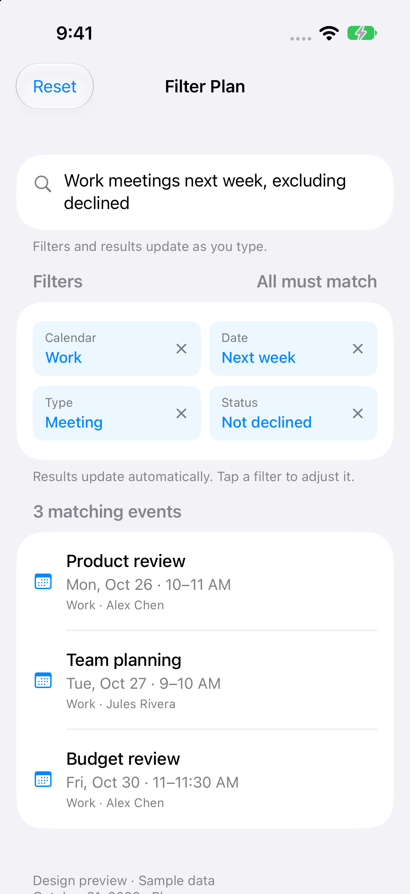

From a sentence to filters.
Real SwiftUI captures. Type naturally to see matching results. Chips explain the filters; adjust them only if needed.
Type and see matching events.
No Interpret or Apply step. The calendar, date, event type and status appear as editable chips above the results.
Sample data · Fixed date: October 21, 2026. These are captures of an isolated native prototype, not an installed app update. The native example supports the displayed sentence; more examples are interactive in the web version.
